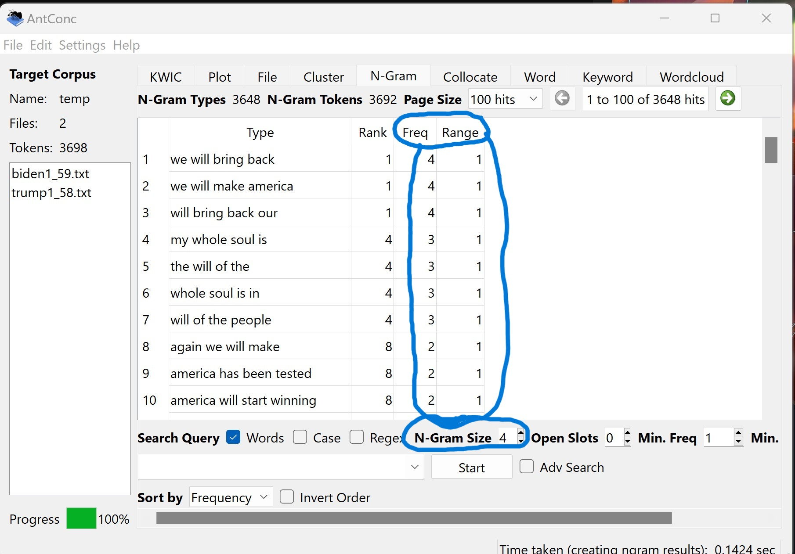
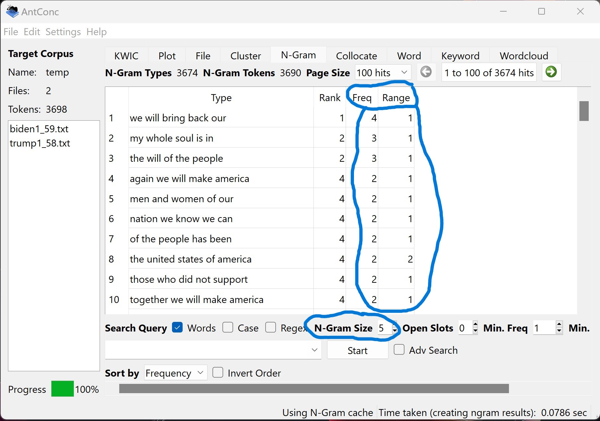

For this Corpus Analysis assignment, I chose to compare the inaugural addresses from
President Joesph Biden and former President Donald Trump. Using the tools AntConc
and Voyant, I am able to compare the frequencies of words or phrases of each speech.
I am also able to compare the speeches together. The references to N-grams mean the amount
of words that are grouped together.
Biden N-grams
Biden used 'the people' and 'we will' very frequently in his address
In Biden's Address, it seems that he wants to advance America in the right
direction. The COVID-19 Pandemic was a in effect while he took office, so
he urges Americans to push through this set back. You can see this when he
says 'we will press forward', 'we will need each other', and 'we will
get through this'.
Trump N-grams
Trump used 'the people' and 'we will' very frequently in his address
In Trump's Address, it seems that he wants to restore what it is to be an American.
He uses the repition of 'we will bring back' to show that he plans on getting the
country back to where it was flourishing.
Biden vs Past Inaugural Addresses
One similarity between Biden's Address and past addresses was the word 'Constitution'.
Biden and former presidents reference the Constitution multiple times throughout their addresses.
Trump vs Past Inaugural Addresses
One similarity between Trump's Address and past addresses was the phrase 'of
our country'. Trump and former presidents reference 'of our country' multiple times throughout their addresses.
Biden vs Trump N-grams
Biden and Trump comparison of phrases 'of our' and 'of our nation'
Larger N-grams


N-gram sizes of 4, 5, and 6 show very litle similarity between the two addresses.
The frequencies of these n-grams are low numbers and the range of texts is mostly 1, which
means these phrases only show up in 1 of the addresses.
Voyant Comparison
Comparing the word frequencies between Biden's and Trump's Addresses(Biden top left and bottom left, Trump
top right and bottom right)
Analysis
In Joseph Biden’s Inaugural Address, he describes how the COVID-19 Pandemic has impacted America.
He goes on to illustrate how Americans will have to get through the tough times. In the Biden N-grams section,
we can see that Biden repeatedly used the phrases ‘we will’ and ‘the people’. He uses these phrases to express
pushing and getting through the pandemic. Some examples include, “We will need all our strength to persevere
through this”, “we will get through this, together”, “we will press forward”, “we will write the next chapter”,
“The will of the people has been heard”, and “we will honor them by becoming the people and nation we know we can”.
On the other hand, Donald Trump’s Inaugural Address didn’t take place during a pandemic. Trump describes how America
needs to continue to advance the country. In the Trump N-grams section, we can see that Trump also frequently used
the phrases ‘we will’ and ‘the people’. He uses these phrases to show how America needs to take on the tough times,
rather than just getting through them. Some examples include, “Today, January 20, 2017, will be remembered as the day
the people became the rulers of this nation”, “this government is controlled by the people”, “we will make America
strong again”, “we will make America safe again”, “we will confront hardships”, and “we will face challenges”.
As I compared Biden’s and Trump’s Addresses to all of the past addresses, I found another key difference between
the two speeches. Most of the past addresses mention a reference to the Constitution, including Biden. Trump’s Address
didn’t mention a reference to the Constitution once, but Biden’s Address referenced the Constitution three times.
Although, Trump’s Address did use the phrase ‘of our country’ repeatedly, in which the past addresses had also used
that phrase frequently. Other than those few differences between the addresses from Biden and Trump, there wasn’t
much to compare. As the n-gram size increased over three, the two speeches didn’t have any similarities. As shown in
the Larger N-grams sections, the frequency of phrases were low and the range was most likely one, which meant it only
occurred in one of the speeches. Overall, Biden’s speech seemed to be all about getting through the pandemic and Trump’s
speech seemed to be about creating a better, more advanced country.